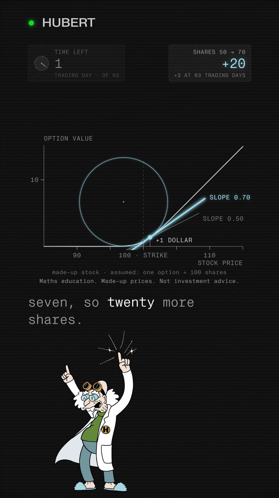

You commented CURVE — this is the one-page calculus sheet.
An option's gamma isn't new maths. It's the bend you already met in training.
Plot an option's value against its stock's price and you get a bent curve: flat on one side, a straight ramp on the other, with a bend between them. The curve's slope is delta — how many shares whoever sold the option holds against it, to stay even on a small move. The curve's bend is gamma, the second derivative, how fast that share count has to change. On a made-up stock at price 100, strike 100, volatility 0.30 and zero interest rates, the bend is gentle with three months left (a one-dollar move nudges the slope from 0.53 to 0.56, about 3 more shares) and sharp with one trading day left (the same move nudges it from 0.50 to 0.70, about 20 more shares) — the bend concentrates into one corner at the strike as expiry nears, and it is the same second derivative that caps a safe step size when training a model.
Companion to the reel · Watch it on @huberttheinventor

Nº001 · The slope
Delta is the slope, not a forecast
An option's value, plotted against the stock's price, is flat on one side of the strike and a straight ramp on the other (the expiry payoff is max(price − strike, 0), Black–Scholes' terminal condition), joined by a bend. Delta is that curve's slope at the current price: the first derivative of value with respect to price, Φ(d₁) in Black–Scholes. It is also, by construction, how many shares of stock whoever sold the option holds against it, so that a small move in the stock leaves their combined position roughly unchanged (Wikipedia, “Greeks (finance)”: a hedged position “will not depend on the price of the stock” to first order). For a made-up stock priced at 100 with an option struck at 100, delta starts at 0.5299 with 63 trading days left — on a hundred-share contract, the seller holds about 53 shares.
Nº002 · The bend
Gamma is the slope's own slope
Gamma is the curve's bend: the second derivative of value with respect to price, ∂²V / ∂S², which in Black–Scholes works out to φ(d₁) / (Sσ√τ) (Wikipedia, “Greeks (finance)”). It is how fast delta itself changes, so it is how many more shares the hedge needs on the next dollar. A circle that hugs the curve at the price marker — the osculating circle, the one circle that shares the curve's own curvature at that point — makes the bend visible: a wide circle is a gentle bend, a tight circle is a sharp one.
Nº003 · The arithmetic
One made-up stock, four points in time
Made-up inputs throughout: stock price 100, strike 100 (at the money), volatility 30%, zero interest rates, one option assumed to cover 100 shares. Time to expiry is counted in trading days, 252 a year, so “63 trading days” is a quarter of a year and “1 trading day” is 1/252 of one. Gamma and delta recomputed 2026-10-02 from Black–Scholes at these inputs; delta at 101 is the same formula one dollar higher, and the share counts are 100 × delta on the made-up hundred-share contract.
| 63 trading days left (τ = 0.25) | gamma 0.0265 · delta 0.5299 → 0.5562 on +$1 · shares 53.0 → 55.6 · +2.6 (spoken “about three”) |
| 30 trading days left | gamma 0.0385 · delta 0.5206 → 0.5588 · shares 52.1 → 55.9 · +3.8 |
| 7 trading days left | gamma 0.0798 · delta 0.5100 → 0.5886 · shares 51.0 → 58.9 · +7.9 |
| 1 trading day left (τ = 1/252) | gamma 0.2111 · delta 0.5038 → 0.7040 · shares 50.4 → 70.4 · +20.0 (spoken “twenty”) |
Delta stays inside 0 and 1 the whole time (“delta will be a number between 0.0 and 1.0 for a long call,” Wikipedia, Greeks (finance)); gamma is what grows, because Γ carries √τ in its denominator and so rises as τ → 0, greatest at the money (Wikipedia, Greeks (finance); Macroption, “Option Gamma”: “as expiration nears, gamma of at-the-money options increases”). The same one-dollar step that needed 3 more shares three months out needs 20 more shares with a day left.
Nº004 · The training bridge
The same second derivative caps a training step
Plot a model's loss against one of its weights and that curve bends too. Its bend — the top eigenvalue of the loss's Hessian, the matrix of its second derivatives — bounds how large a training step can be before gradient descent stops converging and starts oscillating.
the maximum eigenvalue of the training loss Hessian hovers just above the numerical value 2 / (step size) Cohen, Kaur, Li, Kolter, Talwalkar — Gradient Descent on Neural Networks Typically Occurs at the Edge of Stability, ICLR 2021 (arXiv 2103.00065)
Same shape, different curve: an option's gamma is a price curve's bend and bounds the next hedge; a loss's curvature is a training curve's bend and bounds the next step. Neither film draws the other one's picture on top of it; they share only the one mechanism — a bend is how fast a slope changes, and how fast a slope changes sets a limit on how big the next move can safely be.
Nº005 · Gamma exposure
One sum, one sign that's a convention
Gamma exposure (GEX) adds this same bend up across every option on a stock: each strike's gamma, multiplied by its open interest (how many contracts are open there) and the 100 shares a standard contract represents, summed over every strike. The sign of each strike's contribution is a convention, not a result of the calculus: the method this page is describing assumes market-makers bought every call and sold every put, so a call's line is counted positive and a put's line negative. Flip who is assumed to hold the options and every sign flips with it — the bend itself never changes, only the label on it. This page states that convention; it does not take a side on it, and it makes no claim about what any gamma exposure number does to a real stock's price.
Definition only, not reproduced: SqueezeMetrics, “Gamma Exposure (GEX)”, white paper, March 2016, revised December 2017. Its own terms restrict republication of the paper itself, so this page paraphrases the definition and cites the source rather than quoting or showing it.
The honest scope
Every number on this page is made up: one stock, one strike, one volatility, zero rates, chosen to show the shape of the arithmetic, not to describe any real security. Nothing here names a ticker, an index, a price level, a date, a direction, a buy or sell, or shows a vendor's chart. The training bridge is a second shared mechanism, not a claim that calculus for options and calculus for training are the same system — they are two different curves that happen to share one piece of maths.
One system, taken apart.
Same treatment, different machine. No pitch, no thread-bait, and an unsubscribe link that works.
Take it with you
The one-page calculus sheet is this page: slope, bend, the curvature circle, the made-up arithmetic, the training bridge and gamma exposure's sign, free, no email.
The List
One a week. And the other seven, now.
Confirm your address and the whole set arrives — all ten field guides, exactly as they are on the site, nothing held back for subscribers. After that, one new system taken apart every week. No pitch, no thread-bait, and an unsubscribe link that works.